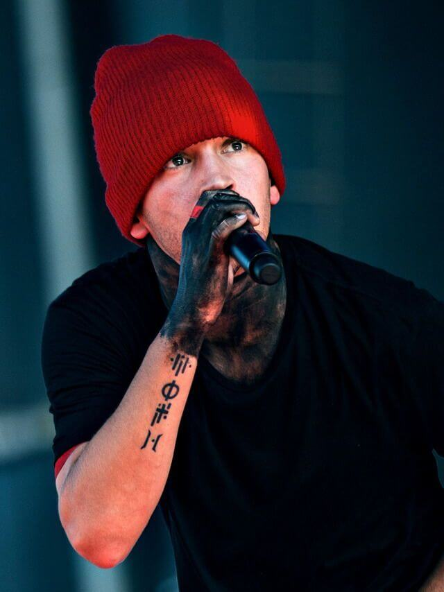

Tyler Joseph
Rapero, cantante, músico, compositor y vocalista de Twenty One Pilots.
Después de ver a un compositor en el club High Street, rechazó una beca de baloncesto de la Universidad de Otterbein, y comenzó a tocar música después de encontrar un viejo teclado en su armario (un regalo de Navidad de su madre), aquí comienza su carrera.